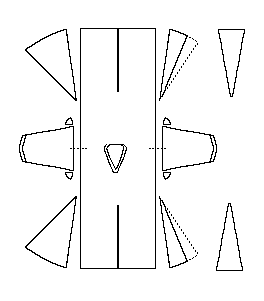

Pattern drawing based on Gjessing.A "bog-find" that has been Radio Carbon dated to about 1000-1210 CE, although it is stylistically similar to clothes from the 13th-14th centuries. It has gores set in the front and on the sides. It is made of a 4-shafted twill.
Go to Tunic Page, or Skjoldehamn Site Page
Some Clothing of the Middle Ages - Tunics - Skjoldehamn, by I. Marc Carlson, Copyright 1996, 1998. This code is given for the free exchange of information, provided the Author's Name is included in all future revisions, and no money change hands